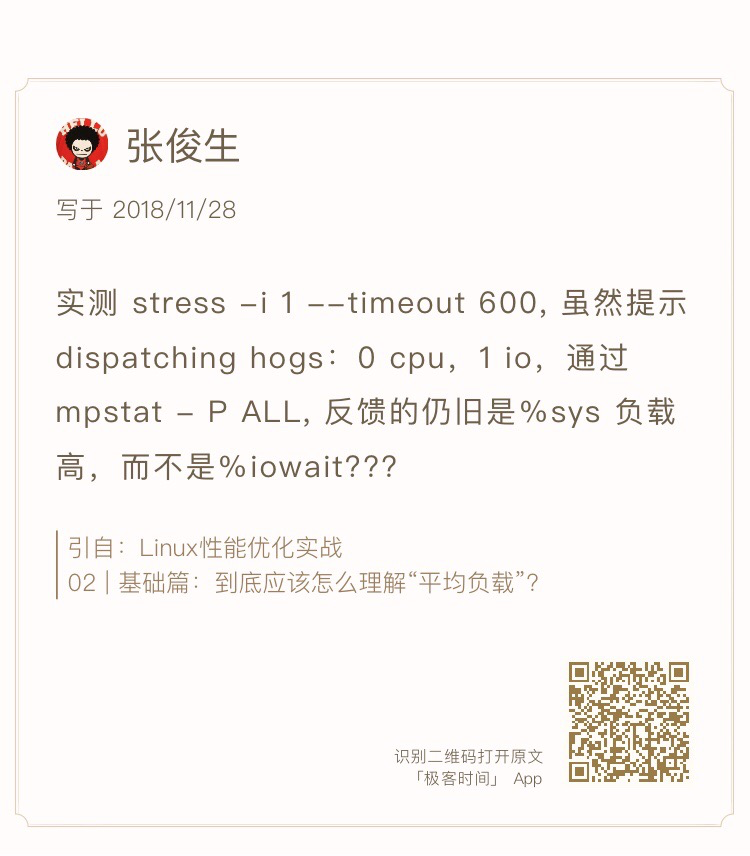
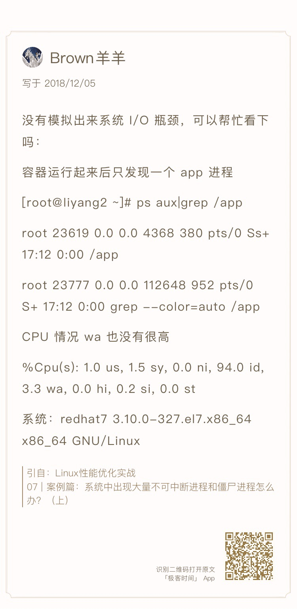
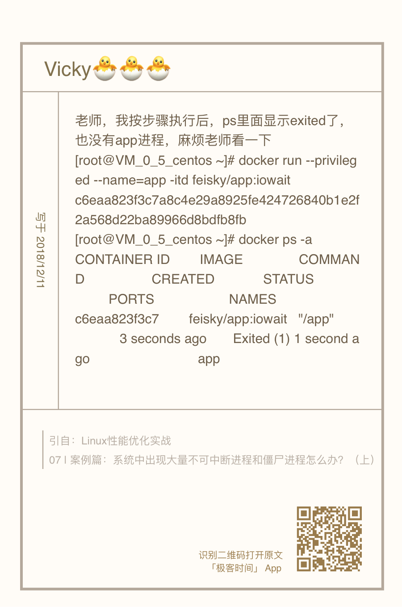
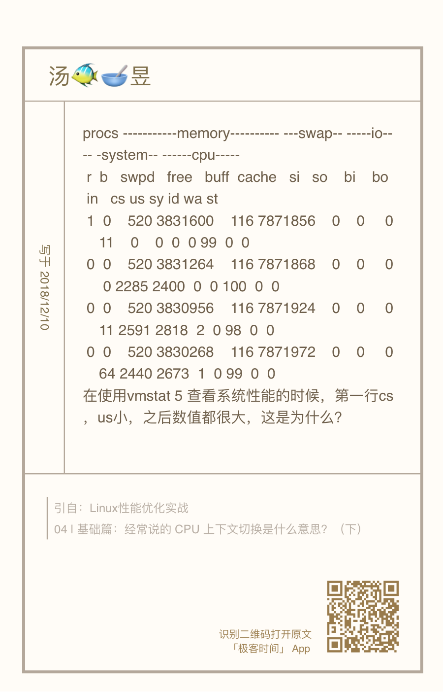

- 00 开篇词 别再让Linux性能问题成为你的绊脚石.md.html
- 01 如何学习Linux性能优化？.md.html
- 02 基础篇：到底应该怎么理解“平均负载”？.md.html
- 03 基础篇：经常说的 CPU 上下文切换是什么意思？（上）.md.html
- 04 基础篇：经常说的 CPU 上下文切换是什么意思？（下）.md.html
- 05 基础篇：某个应用的CPU使用率居然达到100%，我该怎么办？.md.html
- 06 案例篇：系统的 CPU 使用率很高，但为啥却找不到高 CPU 的应用？.md.html
- 07 案例篇：系统中出现大量不可中断进程和僵尸进程怎么办？（上）.md.html
- 08 案例篇：系统中出现大量不可中断进程和僵尸进程怎么办？（下）.md.html
- 09 基础篇：怎么理解Linux软中断？.md.html
- 10 案例篇：系统的软中断CPU使用率升高，我该怎么办？.md.html
- 11 套路篇：如何迅速分析出系统CPU的瓶颈在哪里？.md.html
- 12 套路篇：CPU 性能优化的几个思路.md.html
- 13 答疑（一）：无法模拟出 RES 中断的问题，怎么办？.md.html
- 14 答疑（二）：如何用perf工具分析Java程序？.md.html
- 15 基础篇：Linux内存是怎么工作的？.md.html
- 16 基础篇：怎么理解内存中的Buffer和Cache？.md.html
- 17 案例篇：如何利用系统缓存优化程序的运行效率？.md.html
- 18 案例篇：内存泄漏了，我该如何定位和处理？.md.html
- 19 案例篇：为什么系统的Swap变高了（上）.md.html
- 20 案例篇：为什么系统的Swap变高了？（下）.md.html
- 21 套路篇：如何“快准狠”找到系统内存的问题？.md.html
- 22 答疑（三）：文件系统与磁盘的区别是什么？.md.html
- 23 基础篇：Linux 文件系统是怎么工作的？.md.html
- 24 基础篇：Linux 磁盘I_O是怎么工作的（上）.md.html
- 25 基础篇：Linux 磁盘I_O是怎么工作的（下）.md.html
- 26 案例篇：如何找出狂打日志的“内鬼”？.md.html
- 27 案例篇：为什么我的磁盘I_O延迟很高？.md.html
- 28 案例篇：一个SQL查询要15秒，这是怎么回事？.md.html
- 29 案例篇：Redis响应严重延迟，如何解决？.md.html
- 30 套路篇：如何迅速分析出系统I_O的瓶颈在哪里？.md.html
- 31 套路篇：磁盘 I_O 性能优化的几个思路.md.html
- 32 答疑（四）：阻塞、非阻塞 I_O 与同步、异步 I_O 的区别和联系.md.html
- 33 关于 Linux 网络，你必须知道这些（上）.md.html
- 34 关于 Linux 网络，你必须知道这些（下）.md.html
- 35 基础篇：C10K 和 C1000K 回顾.md.html
- 36 套路篇：怎么评估系统的网络性能？.md.html
- 37 案例篇：DNS 解析时快时慢，我该怎么办？.md.html
- 38 案例篇：怎么使用 tcpdump 和 Wireshark 分析网络流量？.md.html
- 39 案例篇：怎么缓解 DDoS 攻击带来的性能下降问题？.md.html
- 40 案例篇：网络请求延迟变大了，我该怎么办？.md.html
- 41 案例篇：如何优化 NAT 性能？（上）.md.html
- 42 案例篇：如何优化 NAT 性能？（下）.md.html
- 43 套路篇：网络性能优化的几个思路（上）.md.html
- 44 套路篇：网络性能优化的几个思路（下）.md.html
- 45 答疑（五）：网络收发过程中，缓冲区位置在哪里？.md.html
- 46 案例篇：为什么应用容器化后，启动慢了很多？.md.html
- 47 案例篇：服务器总是时不时丢包，我该怎么办？（上）.md.html
- 48 案例篇：服务器总是时不时丢包，我该怎么办？（下）.md.html
- 49 案例篇：内核线程 CPU 利用率太高，我该怎么办？.md.html
- 50 案例篇：动态追踪怎么用？（上）.md.html
- 51 案例篇：动态追踪怎么用？（下）.md.html
- 52 案例篇：服务吞吐量下降很厉害，怎么分析？.md.html
- 53 套路篇：系统监控的综合思路.md.html
- 54 套路篇：应用监控的一般思路.md.html
- 55 套路篇：分析性能问题的一般步骤.md.html
- 56 套路篇：优化性能问题的一般方法.md.html
- 57 套路篇：Linux 性能工具速查.md.html
- 58 答疑（六）：容器冷启动如何性能分析？.md.html
- 加餐（一） 书单推荐：性能优化和Linux 系统原理.md.html
- 加餐（二） 书单推荐：网络原理和 Linux 内核实现.md.html
- 用户故事 “半路出家 ”，也要顺利拿下性能优化！.md.html
- 用户故事 运维和开发工程师们怎么说？.md.html
- 结束语 愿你攻克性能难关.md.html
- 捐赠
13 答疑（一）：无法模拟出 RES 中断的问题，怎么办？
你好，我是倪朋飞。
专栏更新至今，四大基础模块之一的CPU性能篇，我们就已经学完了。很开心过半数同学还没有掉队，仍然在学习、积极实践操作，并且热情地留下了大量的留言。
这些留言中，我非常高兴地看到，很多同学已经做到了活学活用，用学过的案例思路，分析出了线上应用的性能瓶颈，解决了实际工作中的性能问题。 还有同学能够反复推敲思考，指出文章中某些不当或不严谨的叙述，我也十分感谢你，同时很乐意和你探讨。
此外，很多留言提出的问题也很有价值，大部分我都已经在app里回复，一些手机上不方便回复的或者很有价值的典型问题，我专门摘了出来，作为今天的答疑内容，集中回复。另一方面，也是为了保证所有人都能不漏掉任何一个重点。
今天是性能优化答疑的第一期。为了便于你学习理解，它们并不是严格按照文章顺序排列的。每个问题，我都附上了留言区提问的截屏。如果你需要回顾内容原文，可以扫描每个问题右下方的二维码查看。
问题1：性能工具版本太低，导致指标不全
这是使用 CentOS 的同学普遍碰到的问题。在文章中，我的 pidstat 输出里有一个 %wait 指标，代表进程等待 CPU 的时间百分比，这是 systat 11.5.5 版本才引入的新指标，旧版本没有这一项。而CentOS 软件库里的 sysstat 版本刚好比这个低，所以没有这项指标。
不过，你也不用担心。前面我就强调过，工具只是查找分析的手段，指标才是我们重点分析的对象。如果你的pidstat 里没有显示，自然还有其他手段能找到这个指标。
比如说，在讲解系统原理和性能工具时，我一般会介绍一些 proc 文件系统的知识，教你看懂 proc 文件系统提供的各项指标。之所以这么做，一方面，当然是为了让你更直观地理解系统的工作原理；另一方面，其实是想给你展示，性能工具上能看到的各项性能指标的原始数据来源。
这样，在实际生产环境中，即使你很可能需要运行老版本的操作系统，还没有权限安装新的软件包，你也可以查看 proc 文件系统，获取自己想要的指标。
但是，性能分析的学习，我还是建议你要用最新的性能工具来学。新工具有更全面的指标，让你更容易上手分析。这个绝对的优势，可以让你更直观地得到想要的数据，也不容易让你打退堂鼓。
当然，初学时，你最好试着去理解性能工具的原理，或者熟悉了使用方法后，再回过头重新学习原理。这样，即使是在无法安装新工具的环境中，你仍然可以从 proc 文件系统或者其他地方，获得同样的指标，进行有效的分析。
问题2：使用 stress 命令，无法模拟 iowait 高的场景
 
使用 stress 无法模拟 iowait 升高，但是却看到了 sys 升高。这是因为案例中 的stress -i 参数，它表示通过系统调用 sync() 来模拟 I/O 的问题，但这种方法实际上并不可靠。
因为 sync() 的本意是刷新内存缓冲区的数据到磁盘中，以确保同步。如果缓冲区内本来就没多少数据，那读写到磁盘中的数据也就不多，也就没法产生 I/O 压力。
这一点，在使用 SSD 磁盘的环境中尤为明显，很可能你的 iowait 总是 0，却单纯因为大量的系统调用，导致了系统CPU使用率 sys 升高。
这种情况，我在留言中也回复过，推荐使用 stress-ng 来代替 stress。担心你没有看到留言，所以这里我再强调一遍。
你可以运行下面的命令，来模拟 iowait 的问题。
# -i的含义还是调用sync，而—hdd则表示读写临时文件
$ stress-ng -i 1 --hdd 1 --timeout 600
问题3：无法模拟出 RES 中断的问题
这个问题是说，即使运行了大量的线程，也无法模拟出重调度中断 RES 升高的问题。
其实我在 CPU 上下文切换的案例中已经提到，重调度中断是调度器用来分散任务到不同 CPU 的机制，也就是可以唤醒空闲状态的 CPU ，来调度新任务运行，而这通常借助处理器间中断（Inter-Processor Interrupts，IPI）来实现。
所以，这个中断在单核（只有一个逻辑 CPU）的机器上当然就没有意义了，因为压根儿就不会发生重调度的情况。
不过，正如留言所说，上下文切换的问题依然存在，所以你会看到， cs（context switch）从几百增加到十几万，同时 sysbench 线程的自愿上下文切换和非自愿上下文切换也都会大幅上升，特别是非自愿上下文切换，会上升到十几万。根据非自愿上下文的含义，我们都知道，这是过多的线程在争抢 CPU。
其实这个结论也可以从另一个角度获得。比如，你可以在 pidstat 的选项中，加入 -u 和 -t 参数，输出线程的 CPU 使用情况，你会看到下面的界面：
$ pidstat -u -t 1
14:24:03 UID TGID TID %usr %system %guest %wait %CPU CPU Command
14:24:04 0 - 2472 0.99 8.91 0.00 77.23 9.90 0 |__sysbench
14:24:04 0 - 2473 0.99 8.91 0.00 68.32 9.90 0 |__sysbench
14:24:04 0 - 2474 0.99 7.92 0.00 75.25 8.91 0 |__sysbench
14:24:04 0 - 2475 2.97 6.93 0.00 70.30 9.90 0 |__sysbench
14:24:04 0 - 2476 2.97 6.93 0.00 68.32 9.90 0 |__sysbench
...
从这个 pidstat 的输出界面，你可以发现，每个 stress 线程的 %wait 高达 70%，而 CPU 使用率只有不到 10%。换句话说， stress 线程大部分时间都消耗在了等待 CPU 上，这也表明，确实是过多的线程在争抢 CPU。
在这里顺便提一下，留言中很常见的一个错误。有些同学会拿 pidstat 中的 %wait 跟 top 中的 iowait% （缩写为wa）对比，其实这是没有意义的，因为它们是完全不相关的两个指标。
pidstat 中， %wait 表示进程等待 CPU 的时间百分比。
top 中 ，iowait% 则表示等待 I/O 的 CPU 时间百分比。
回忆一下我们学过的进程状态，你应该记得，等待 CPU 的进程已经在 CPU 的就绪队列中，处于运行状态；而等待 I/O 的进程则处于不可中断状态。
另外，不同版本的 sysbench 运行参数也不是完全一样的。比如，在案例 Ubuntu 18.04 中，运行 sysbench 的格式为：
$ sysbench --threads=10 --max-time=300 threads run
而在 Ubuntu 16.04 中，运行格式则为（感谢 Haku 留言分享的执行命令）：
$ sysbench --num-threads=10 --max-time=300 --test=threads run
问题4：无法模拟出I/O性能瓶颈，以及I/O压力过大的问题

这个问题可以看成是上一个问题的延伸，只是把 stress 命令换成了一个在容器中运行的 app 应用。
事实上，在 I/O 瓶颈案例中，除了上面这个模拟不成功的留言，还有更多留言的内容刚好相反，说的是案例 I/O 压力过大，导致自己的机器出各种问题，甚至连系统都没响应了。
之所以这样，其实还是因为每个人的机器配置不同，既包括了 CPU 和内存配置的不同，更是因为磁盘的巨大差异。比如，机械磁盘（HDD）、低端固态磁盘（SSD）与高端固态磁盘相比，性能差异可能达到数倍到数十倍。
其实，我自己所用的案例机器也只是低端的 SSD，比机械磁盘稍微好一些，但跟高端固态磁盘还是比不了的。所以，相同操作下，我的机器上刚好出现 I/O 瓶颈，但换成一台使用机械磁盘的机器，可能磁盘 I/O 就被压死了（表现为使用率长时间100%），而换上好一些的 SSD 磁盘，可能又无法产生足够的 I/O 压力。
另外，由于我在案例中只查找了 /dev/xvd 和 /dev/sd 前缀的磁盘，而没有考虑到使用其他前缀磁盘（比如 /dev/nvme）的同学。如果你正好用的是其他前缀，你可能会碰到跟Vicky 类似的问题，也就是app 启动后又很快退出，变成 exited 状态。

在这里，berryfl 同学提供了一个不错的建议：可以在案例中增加一个参数指定块设备，这样有需要的同学就不用自己编译和打包案例应用了。

所以，在最新的案例中，我为 app 应用增加了三个选项。
-d 设置要读取的磁盘，默认前缀为
/dev/sd或者/dev/xvd的磁盘。-s 设置每次读取的数据量大小，单位为字节，默认为 67108864（也就是 64MB）。
-c 设置每个子进程读取的次数，默认为 20 次，也就是说，读取 20*64MB 数据后，子进程退出。
你可以点击 Github 查看它的源码，使用方法我写在了这里：
$ docker run --privileged --name=app -itd feisky/app:iowait /app -d /dev/sdb -s 67108864 -c 20
案例运行后，你可以执行 docker logs 查看它的日志。正常情况下，你可以看到下面的输出：
$ docker logs app
Reading data from disk /dev/sdb with buffer size 67108864 and count 20
问题5：性能工具（如 vmstat）输出中，第一行数据跟其他行差别巨大

这个问题主要是说，在执行 vmstat 时，第一行数据跟其他行相比较，数值相差特别大。我相信不少同学都注意到了这个现象，这里我简单解释一下。
首先还是要记住，我总强调的那句话，在碰到直观上解释不了的现象时，要第一时间去查命令手册。
比如，运行 man vmstat 命令，你可以在手册中发现下面这句话：
The first report produced gives averages since the last reboot. Additional reports give information on a sam‐
pling period of length delay. The process and memory reports are instantaneous in either case.
也就是说，第一行数据是系统启动以来的平均值，其他行才是你在运行 vmstat 命令时，设置的间隔时间的平均值。另外，进程和内存的报告内容都是即时数值。
你看，这并不是什么不得了的事故，但如果我们不清楚这一点，很可能卡住我们的思维，阻止我们进一步的分析。这里我也不得不提一下，文档的重要作用。
授之以鱼，不如授之以渔。我们专栏的学习核心，一定是教会你性能分析的原理和思路，性能工具只是我们的路径和手段。所以，在提到各种性能工具时，我并没有详细解释每个工具的各种命令行选项的作用，一方面是因为你很容易通过文档查到这些，另一方面就是不同版本、不同系统中，个别选项的含义可能并不相同。
所以，不管因为哪个因素，自己man一下，一定是最快速并且最准确的方式。特别是，当你发现某些工具的输出不符合常识时，一定记住，第一时间查文档弄明白。实在读不懂文档的话，再上网去搜，或者在专栏里向我提问。
学习是一个“从薄到厚再变薄”的过程，我们从细节知识入手开始学习，积累到一定程度，需要整理成一个体系来记忆，这其中还要不断地对这个体系进行细节修补。有疑问、有反思才可以达到最佳的学习效果。
最后，欢迎继续在留言区写下你的疑问，我会持续不断地解答。我的目的仍然不变，希望可以和你一起，把文章的知识变成你的能力，我们不仅仅在实战中演练，也要在交流中进步。
© 2019 - 2023 Liangliang Lee. Powered by gin and hexo-theme-book.